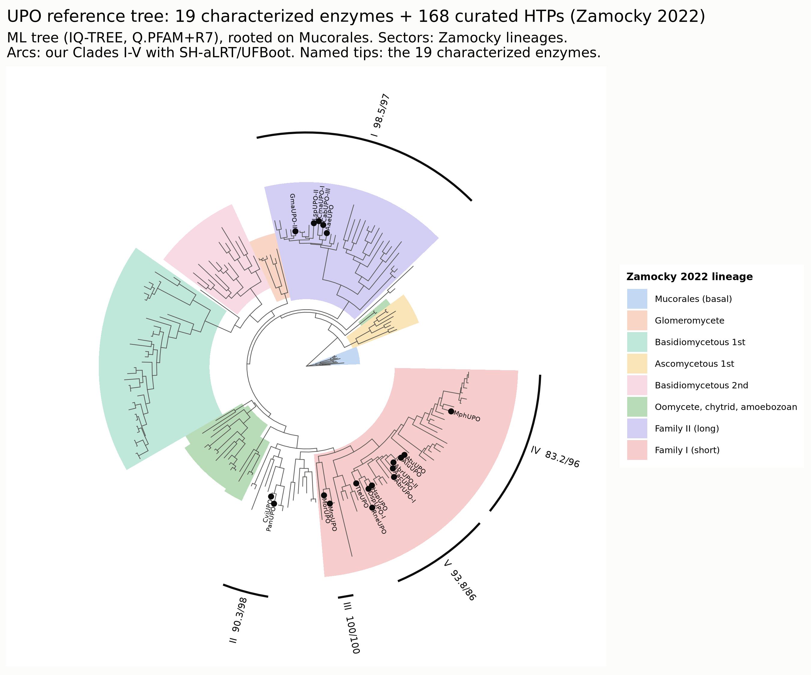
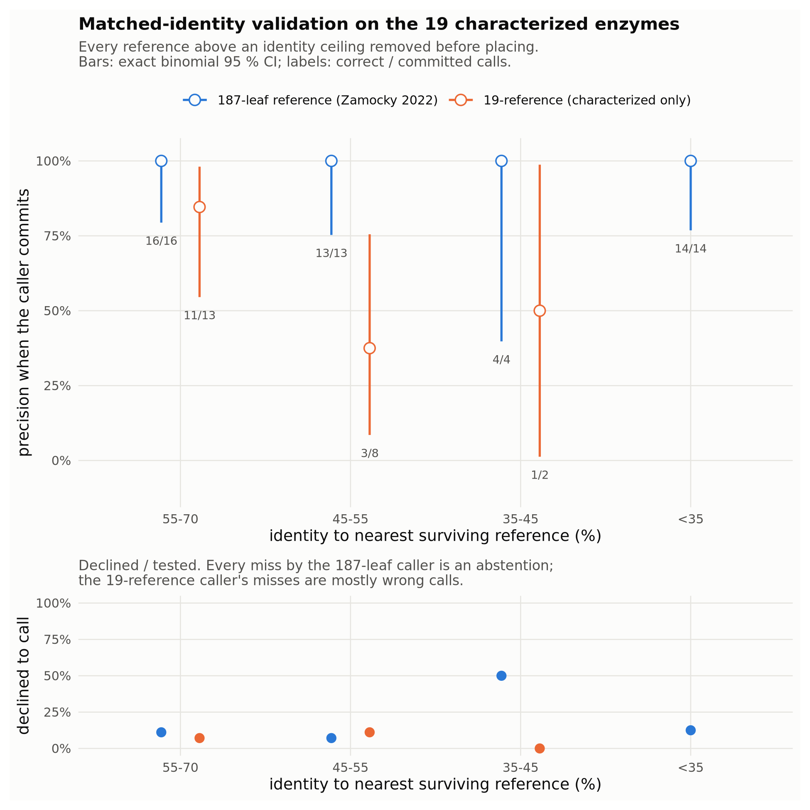
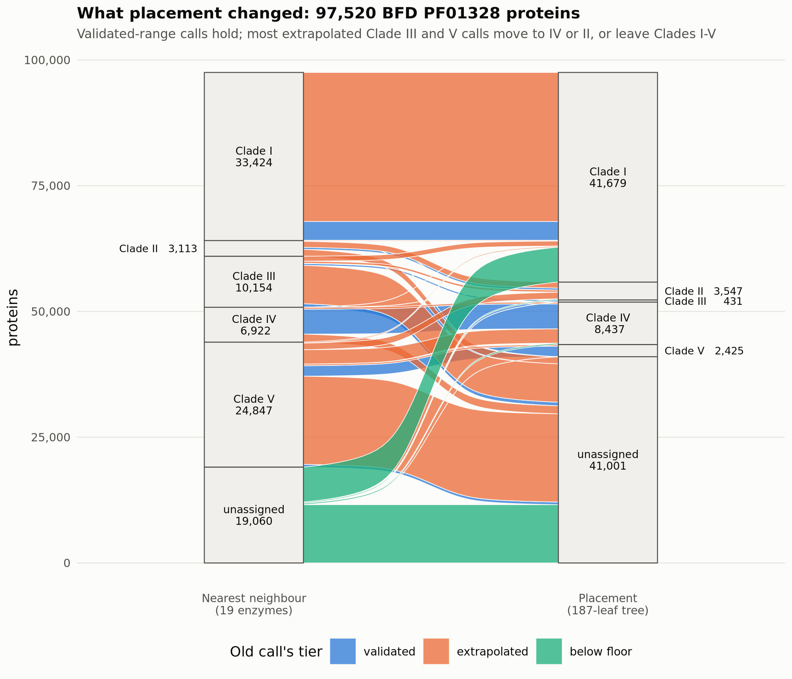

Unspecific peroxygenases across 15,137 fungal genomes
Census, clade calling, what the model can and cannot predict, and what to assay
A working analysis, not a finished study. Every clade call, site call and candidate here is a prediction from sequence and structure; no enzyme in this report has been expressed or assayed by us. Section 7 states the limitations and section 4 reports the results that came out negative, including four attempts to extend the model that failed their own tests.
The report is explicit about where it stops: identifying PF01328 sites is validated (95/95 against the published structure-based matrix), ranking clade-V-like pockets is reliable for ordering candidates, and predicting whether an arbitrary protein is an active peroxygenase is not reliable (out-of-clade AUC 0.556). Section 3 explains why that is arithmetic rather than something reanalysis can fix.
The source of truth is analysis/enzymes_UPO/ in the repository; this page renders REPORT.md from that directory, so the two cannot drift. The 45 documents it synthesizes are listed at the end, and the per-protein table it describes is in the repository beside the code that built it.
What exists, what can be called reliably, and what cannot.
2026-11-15. A synthesis of the UPO workstream. Every number here is produced by code in this directory and stated with its own evidence document; where a result is negative or bounded, the bound is given rather than the headline. The documents this draws on are listed at the end, and the per-document detail is the authority — this page is the route through them.
Unspecific peroxygenases (UPOs, Pfam PF01328) are secreted fungal heme-thiolate enzymes that transfer oxygen from H₂O₂ to unactivated C–H bonds. They do with a single cheap co-substrate what P450 monooxygenases need a reductase and NAD(P)H for, which is why they are of interest for synthesis. Fewer than thirty have been characterized biochemically.
In short
- The family is large and the catalytic machinery is common. 97,520 PF01328 proteins in 15,137 genomes; 34,561 (35.4 %) carry the full catalytic core.
- Almost none of it is sequence-novel, and the apparent novelty is a deposition artefact. All 7,055 representatives have an
nrhit. Apparent novelty is 2.0 % for RefSeq-annotated genomes and 18.7 % for GenBank-only ones (z = 7.4). - What is genuinely new is lineage coverage, not sequence. Whole well-supported clades of UPO-like proteins contain no characterized enzyme at all.
- Active-site identification is reliable; activity prediction outside clade V is not. 95/95 agreement on site assignment against the published structure-based matrix; out-of-clade AUC 0.556 — chance — on predicting activity.
- The clade caller refuses most of the database, by design. 78.9 % unassigned; 10.7 % carry a
reliablecall. Two independent callers agree 99.6 % above the trust boundary and 78.1 % below it. - Four attempts to break the ceiling all failed, and each failure was measured. Reference expansion made precision worse (80 % → 66 %); applicability distance failed as a confidence measure (p = 0.88); structural features from predicted models made the activity model worse (0.333); the Boltz-2 run hit its pre-declared kill switch and its 14 models were discarded.
- Everything traces to one number: 19 characterized enzymes, three of five clades having one or two.
- Two errors were found in BFD itself while building the candidate list — one of them affecting every consumer of the gene-model flags.
1. The census
| PF01328 proteins in BFD | 97,520 |
| genomes carrying at least one | 15,137 |
| carrying the full catalytic core (Cys39, Glu109, Asp111, Glu180; HspUPO numbering) | 34,561 (35.4 %) |
| site assignment coverage | all 97,520; set-equal to BFD’s own PF01328 annotation, 0 missing, 0 extra |
Detail: G1_FINDINGS.md, G1_BFD_SUMMARY.md, CENSUS.md.
2. Novelty is deposition, not biology
The workstream began as “are there new UPOs in early-diverging fungi?” The answer is largely no, and the way it is no is the interesting part.
Every one of the 7,055 catalytic-core representatives has a hit in nr. The apparent 18 % novelty splits cleanly by where the source genome was deposited: 2.0 % for genomes with a RefSeq (GCF_) annotation against 18.7 % for GenBank-only genomes, z = 7.4. A protein looks new when its genome’s proteins were never deposited in a form nr indexes.
This is the same effect, in a different family, as the one measured for the delta-gain funnel’s enriched-Pfam result, where counting the Y1000+ yeast genomes as public removes three quarters of the novelty (analysis/delta_gain_funnel/REPORT.md). Two independent analyses in this repository now put a number on the same confound.
Contamination was checked and is not the explanation: UPO genes sit on contigs more gene-rich than their genome’s typical contig (G1_FINDINGS.md §6).
What is new is lineage coverage. Several well-supported clades hold thousands of UPO-like proteins and not one characterized enzyme. That is what the candidate list targets.
3. Calling clades: a caller that refuses
The production clade call is phylogenetic placement (EPA) on a 187-leaf reference tree built in-house from Zamocky et al. 2022, not nearest-neighbour identity to the 19 characterized enzymes. It replaced the earlier caller after direct comparison (RECONCILIATION.md §1).

Maximum likelihood (IQ-TREE, Q.PFAM+R7), rooted on Mucorales. Coloured sectors are Zamocky et al. 2022’s lineages; the black arcs outside them are Clades I–V with SH-aLRT/UFBoot support. The 19 named tips are every characterized enzyme the field has. Note how few they are, and how unevenly they fall — Clades III and V hold most of them, Clades I and II almost none. That imbalance is the origin of every limit in this report. PDF
| tier | n | % | meaning |
|---|---|---|---|
unassigned |
76,913 | 78.9 | no placement reached the 0.5 likelihood-weight threshold |
extrapolated |
10,152 | 10.4 | placed, below the trust boundary |
reliable |
10,455 | 10.7 | the usable set |
The 78.9 % is the caller declining, not failing. PF01328 is wider than the UPO clades, so most of these proteins are not expected to belong to any of them.
An external check on where the boundary sits. The table carries two clade calls made by methods that are not derived from each other — EPA placement and nearest-reference identity. They agree on 99.6 % of reliable rows and 78.1 % of extrapolated rows. The methods converge above the boundary and diverge below it, measured on real BFD proteins rather than on references. This does not show the calls are correct — two methods can agree and both be wrong, and both rest on the same 19 enzymes — only that the boundary drawn from reference tests reproduces on data.

Each enzyme is re-called with every reference above an identity ceiling removed, so the test asks what happens at a given distance from anything known. Upper panel: precision when the caller commits, with exact binomial 95 % CI and correct/committed counts. Lower panel: how often it declines. The 187-leaf caller (blue) is 16/16, 13/13, 4/4 and 14/14 — it does not make a wrong call at any distance — while the 19-reference caller (orange) falls to 3/8 at 45–55 % identity. The intervals are wide because n = 19; this shows the caller abstains rather than guesses, not that it is accurate to within a few percent. PDF
Reading Table T1 without being misled
figures/data/table_T1.md gives per-clade references, support, BFD membership, catalytic core, Glu180 frequency and measured activity range. Its “BFD proteins” column and the tier table above count different things: Table T1 assigns every protein to its best placement regardless of confidence, so it partitions all 97,520, while the tier table applies the 0.5 threshold. Clade I shows 41,679 in one and 2,565 in the other for that reason. Clade I is also the same group as Zamocky’s Basidiomycetous 3rd (Family II, long).
Three caveats travel with that table and should not be separated from it:
- The glomeromycete clade’s 784 members are not 784 glomeromycete UPOs. Only 121 are Glomeromycota; 360 are Dothideomycetes, and 585 of the 663 outsiders carry
long_pendant. Report it as 121 plus 78 short-pendant others. - Basidiomycetous 1st holds ~2,265 ascomycete proteins that are not long-pendant — see §6.
- Family I (short) has low node support (SH-aLRT/UFBoot 79.4/65); Clades III–V sit inside it.

Flows are coloured by how much the old call could be trusted. Calls made inside the validated identity range (blue) mostly survive; extrapolated Clade III and V calls (orange) largely move to Clade IV or II, or leave Clades I–V altogether. This figure counts the way Table T1 does, not the way the tier table does: every protein is drawn at its best placement regardless of confidence, so “unassigned” here means placed outside Clades I–V* (41,001) and not below the 0.5 likelihood-weight threshold (76,913). The two numbers answer different questions and the columns sum to 97,520 either way. PDF*
What is reliable, and where it stops
MODEL_CARD.md states the model as three tasks because the evidence differs sharply between them. Two are reliable. One is not.
| task | status | the number |
|---|---|---|
| A. Find PF01328 proteins, read active-site residues | Reliable | 95/95 agreement with the published structure-based matrix; catalytic positions rank 6th, 12th, 15th of 186 match states |
| B. Rank proteins by similarity to the clade-V aliphatic pocket | Reliable for ranking, on one substrate | LOO AUC 0.956, R² +0.496, permutation p = 0.0005 |
| C. Predict whether an arbitrary protein is an active peroxygenase | Not reliable | out-of-clade AUC 0.556 |
A low score is not evidence of inactivity. GmaUPO-II is 49.3 % active on 4-propylguaiacol and scores 1 of 5 pocket matches. Clade assignment does not rescue Task C.
Why Task C cannot be fixed by reanalysis. The out-of-clade activity distribution has a gap: GmaUPO-II at 49.3 %, then MphUPO at 2.7 %. No threshold between 3 % and 49 % changes the out-of-clade positive count from one. The constraint is arithmetic, not analytical.
4. The negative results
These are the substance of the workstream, and they are reported because each was tested rather than assumed.
| question | result | where |
|---|---|---|
| Does the aliphatic pocket predict aromatic-ring activity? | No. r = +0.176, n = 19 | RESULT_T2_negative.md |
| Is T1 activity predicted by pocket, given clade? | Barely. partial r = +0.129 — it is the clade that predicts | CALIBRATION_MATRIX.md §8 |
| Can the reference set be expanded with confident BFD members? | No. Precision 80 % → 66 %; inferred labels propagate into topology | PLACEMENT_FINDINGS.md |
| Can applicability distance give per-protein confidence? | No. Spearman with model skill −0.281, p = 0.88 | MODEL_VALIDATION.md §F |
| Do structural features from predicted models help? | No. Out-of-clade AUC 0.333, worse than sequence alone | STRUCTURE_VS_RESIDUES.md |
| Are UPOs co-regulated with the CCAAT complex that Phase A implicated? | No. 15 RNA-seq libraries, median mapping 59.3 %; no treatment shifts the 12 UPOs as a class (p 0.14–0.79); UPOs correlate less with the CCAAT complex (+0.011) than with random genes (+0.097) | G3_PHASE_B_RESULTS.md |
The Boltz-2 run and its kill switch. The plan declared in advance that if predicted channel widths failed to reproduce the five experimental ones, the other 14 models would be discarded. They failed. The 14 models were discarded and the conclusion recorded is that this cannot be done with predicted structures at this scale.
The channel-width question, with its reversals recorded. CAVER 3.0.2 gave ~1 Å bottlenecks and the first conclusion was that the ring rule does not transfer. That was wrong — 3.0.2 has a documented bug placing the start vertex in too narrow a cavity. CAVER 3.0.3 reproduced the published ordering and gave r = +0.933 on four enzymes. Adding the fifth structure (TteUPO, 9IZ8 — the widest channel measured, zero activity) dropped it to r = +0.452. TteUPO can be set aside on grounds recorded before that measurement, but that is a post-hoc exclusion rescuing a correlation, and n = 4 is not evidence. CHANNEL_FINDINGS.md.
One positive worth keeping. Phase A found that Clade IV is the only clade whose promoter motifs replicate across independent lineages and survive both controls, including a CCAAT box naming the CCAAT-binding complex twice (HAP3, HAP5) — G3_FINDINGS.md. Phase B then found no co-regulation in RNA-seq. The motif result stands; the regulatory interpretation does not.
5. What to assay
Three lists, answering different questions. They can be run together.
37 lineage candidates (CANDIDATES.md) — rules written and committed before the selection was run, in 8 pools across clade IV and six uncharacterized lineages, one protein per genus, one per 70 % identity cluster. A result in pool A or B is a first measurement for a lineage. Suggested first set: 12. Pool C (Glu180 absent — the lineage trait itself) waits on the structure question.
A 96-protein panel (ASSAY_PANEL.md) — 84 predicted active, 12 predicted inactive controls, 61 distinct pocket 5-mers, 79 species, 16 lineages, 93 % outside clade V. The controls are the point: GmaUPO-II shows the predicted-inactive cell is exactly where the model is known to fail, so assaying only predicted positives would measure precision and leave the false-negative rate unknown.
Six pre-registered external predictions (EXTERNAL_VALIDATION.md) — the cheapest experiment that would settle the model question. Six characterized UPOs already exist as purified enzymes elsewhere with no published 4-propylguaiacol number. Predictions recorded before any measurement: active DchUPO, DcaUPO; inactive CraUPO, MweUPO, PabUPO-II, UPO1_Codo. A failure among the predicted actives is the informative outcome — it would confirm the rule overcalls outside clade V, which is what the 0.556 warns about.
Decision D1 (Eurotiales sourcing for the Pichia construct) is recorded as moot: it rested on the pocket score, which does not predict anything of interest outside clade V (PLAN.md).
6. Two errors found in BFD
Both were found while building the candidate list, and both are recorded for BFD rather than worked around here (bfd_findings/REPORT.md).
Start/stop-codon flags are wrong, database-wide. The shortlist’s gene-model rule removed Mucorales and Glomeromycota proteins wholesale (83 % and 75 % flagged incomplete). They are not incomplete. Splicing 5,816 models from the assemblies showed 99.3 % of flagged-missing starts and 99.8 % of flagged-missing stops are present; the true incomplete rate is ~0.2 %, not 10–60 %. The cause is case-sensitive codon matching against soft-masked genomes — a lower-case atg read as absent — which is why TAA stops are flagged missing more often (39.8 %) than TAG (18.8 %) or TGA (16.1 %). Fixed in Fungi_BFD fb1d7cd; gene_transcripts.parquet predates the fix. Any consumer that filtered on these flags silently dropped ~10 % of models BFD-wide and about half in Mucorales and Glomeromycota.
An ascomycete lineage inside a basidiomycete clade. 2,265 of the 6,378 members of Basidiomycetous 1st are Ascomycota, in 2,190 genomes — almost all single-copy, in 47.5 % of Dothideomycetes and all 67 Orbiliomycetes genomes, attaching as close to the references as the clade’s basidiomycete members and carrying the clade’s Asn180 at the same frequency (87.4 %). Zamocky noted one ascomycete transfer into this clade; this is two orders of magnitude more. Spread across thousands of independent genomes at single copy, it is not contamination, and it is not one recent transfer. It fits an old ascomycete UPO lineage. Placement cannot decide between nested (transfer) and sister (old lineage) because the reference holds only the basidiomycete diversity. The test that would settle it — an ML tree of ~150 + ~150 dereplicated members with two outgroups — is specified and not done.
7. Limitations
- Nineteen characterized enzymes. Three of five clades have one or two. 71 of 114 matched-identity test cases were impossible because removing a reference’s close relatives removed its whole clade.
- One substrate, one assay, one publication. Task B’s calibration is 4-propylguaiacol conversion. It says nothing about which rings an enzyme cleaves — that is a separate measured negative.
- Clade calls below ~55 % identity are not trustworthy under the old caller (precision 38 %), and BFD’s median identity to a reference is 43.8 %. The placement caller made no errors at matched identity down to <35 %, but on 19 enzymes.
- 69.6 % of BFD falls outside the calibration domain, and
calib_domainis coverage, not confidence — it was tested as a confidence measure and failed. - No assay supports any rate or substrate range for any BFD protein here.
catalytic_coremeans four residues are present: necessary, not sufficient. - Clade IV has one characterized member, so every clade IV row stays flagged
+provisional_cladeIV; and clade IV’s status as a separate clade is unresolved (20–28 % bootstrap) even though the group is real (652/789 confirmed). - The shortlist should be re-run once the BFD tables are rebuilt; pools B4 and B5 were drawn from an eligible set shrunk by the flag bug. The 37 picks themselves stand.
8. What would change this
More characterized enzymes. Every limit above traces to 19, and the alternatives were tested rather than assumed: expansion with inferred labels makes the caller worse, the structural route is calibrated on four, a second 4-PG panel does not exist, and labels from other papers are invalid because they are substrate-specific — PaDa-I, the field’s benchmark peroxygenase, converts 4-propylguaiacol at 1.7 %.
The six pre-registered assays are the cheapest move. The 96-well panel is the thorough one.
The deliverable
data/bfd_full/upo_sites_bfd_scored.tsv.zst — one row per PF01328 protein, 97,520 rows. Filter on clade_trust, rank on t1_pocket_matches, read calib_domain per protein. Site residues and catalytic_core are validated for every row; the clade call is bounded, which is why the tier column exists. No activity score is emitted.
Shortlist: 5,115 proteins across 1,378 species carry both the catalytic core and ≥ 3/5 pocket matches; 1,246 sit outside clade V, including 29 in early-diverging phyla. A candidate list for assay, not a prediction of activity.
Software: upo_sites/bin/upo_scan.py — one command, any proteome → sites + score + applicability domain. Regression-tested 87/87 against the full BFD pipeline.
Figures
All three are shown inline in §3 above, as PNG with a PDF beside each in figures/out/. They are regenerated end-to-end by figures/slurm/figures.sh, which runs figures/bin/prep_figures.py (tables, tested) and then figures/bin/plot_figures.R (plots) in a pinned conda environment, so the numbers in the panels come from the same tables as the numbers in this text.
| figure | shows |
|---|---|
figures/out/fig1_reference_tree |
the 187-leaf reference, rooted on Mucorales; Zamocky lineages as sectors, Clades I–V as arcs with support; the 19 characterized enzymes named |
figures/out/fig3_old_vs_placement |
all 97,520 proteins: nearest-neighbour call → placement call, flows coloured by the old call’s confidence |
figures/out/fig4_matched_identity |
matched-identity validation of both callers on the 19 enzymes: precision with exact 95 % CI, and abstention rate |
Source documents
Census and novelty G1_FINDINGS.md, G1_BFD_SUMMARY.md, CENSUS.md · Model and its bounds MODEL_CARD.md, MODEL_VALIDATION.md, T1_SCORE_REPORT.md, APPLICABILITY.md · Clade calling upo_place/README.md, PLACEMENT_FINDINGS.md, RECONCILIATION.md, FINAL_TABLE_REPORT.md · Negatives RESULT_T2_negative.md, CALIBRATION_MATRIX.md, STRUCTURE_VS_RESIDUES.md, CHANNEL_FINDINGS.md, G3_PHASE_B_RESULTS.md · Motifs G3_FINDINGS.md, G3_MOTIF_REPLICATION.md · Candidates CANDIDATES.md, ASSAY_PANEL.md, EXTERNAL_VALIDATION.md · BFD issues bfd_findings/REPORT.md · Status and decisions STATUS.md, PLAN.md, DESIGN.md.